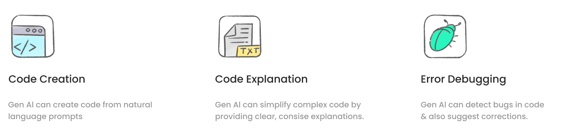

Gen AI Chatbot Builder (OpenSource)
Microsoft (2023-24)
OVERVIEW
Summary
At Microsoft, I contributed to a few projects, with major focus on “Jugalbandi Studio”, an AI based no-code chatbot building platform aimed at democratizing software development. Its mission is to empower organizations lacking technical resources to transition their services online. Through collaboration with developers, NGOs, and government departments, I tailored the Studio's interface and user experience to address specific needs and pain points through iterative design.
Tools
Figma,
Adobe Suite
Role
Sole Designer
(End-to-End)
Client
Open Nyai
Timeline
Oct 2023 - Present

CONTEXT
Most organizations lack tech resources to bring their services online.
This gap in technological capabilities leaves organizations struggling to keep up with modern demands. The inability to leverage digital tools not only limits their operational capacity but also affects their ability to scale, innovate, and meet customer expectations efficiently. As a result, they face several key challenges:

Can we leverage Gen AI to empower novice-developers?
Gen AI advancements have significantly empowered novice developers, making coding more accessible and user-friendly. Many developers now rely on Gen AI for key tasks, leveraging its capabilities to assist them in various stages of development:
Partners & Clients
We collaborated with a range of partner organizations that played a pivotal role in supporting the development and expanding the platform's reach. By working closely with various organizations and government departments, we successfully built and implemented chatbot services tailored to their specific needs, enhancing both functionality and user adoption.


Let's start with a chatbot builder!
Chatbots have evolved from simple rule-based systems to sophisticated AI-driven platforms, transforming user interactions with digital services. With advancements in Gen AI, they can now handle complex interactions and provide personalized experiences, making them an ideal choice for organizations looking to streamline service delivery. Chatbots offer several key benefits:

RESEARCH & DESIGN
What kind of studies has been done in this domain?
As part of Jugalbandi Studio design and our ongoing work on an HCI research paper, I conducted an extensive review of 150+ academic papers to explore foundational approaches in novice programming for conversational agent development. While specific insights are NDA-protected, our focus areas included:
What is the state of current solutions?
To understand the market landscape, I examined products from similar domains, including chatbot builders, low/no-code tools, general-purpose generative AI, code generation AI, copilots, assistants, and generative AI studios.

What exactly do the organisations want?
I led an initial workshop with each client organization to thoroughly understand their needs and collaboratively create mockups of their envisioned chatbot solutions. These mockups were iterated and validated with clients, serving as a foundation for aligning our development team and partners on key platform features. This approach clarified the essential functionalities needed to empower novice developers in building effective chatbots on our platform.

Process
The process can be divided into two parts. I would gather client requirements and build mockups of their chat service. Using these as golden standard we would reverse engineer the features needed in our platform for building these chatbots. The second part of process is to ideate and iterate the platform's design.

Initial versions
With limited developer resources, we concentrated on small, iterative design changes to enhance the user experience. Early iterations evolved from a prompt-only interface to a chat-based interaction model, eventually adding a dedicated test feature for improved usability.


Challenges along the way
Throughout the project, several challenges emerged that shaped our approach and my personal growth.

User testing
We conducted multiple rounds of usability testing within the organization to validate our prototypes, test assumptions, and gather critical feedback.

Iterated versions
In subsequent iterations, we incorporated a visual flow representation, followed by a sleek, modern UI design with larger code representation view for enhanced readability and usability.


Implemented features
With my background in computer engineering and previous experience with Gen AI, I was able to brainstorm and refine ideas that balanced user needs with technical feasibility. Through multiple iterations, we defined several critical features:
👩🏽💻 Code Comprehension
Understanding code is time-consuming and overwhelming, especially for novices. Our platform simplifies this, making code easier to grasp.
🛠️ Debugging Tools
Debugging is complex. Instead of web-searching errors, developers can use integrated built-in suggestions for seamless corrections in one place.
🧩 Plugin Library
Organizations need flexibility. Our library of "JB Features" (avoiding jargon) grows over time, supporting more plugin types.
🤖 Smart Assist
Generative AI helps users with smart suggestions and content generation for a smoother experience.
✨ Prompt Support
Based on user feedback, we offer support for three main categories of prompts, improving user interaction.
Jugalbandi Studio
Watch Satya Nadella talk about our project 'Jugalbandi Studio'
LEARN MORE
Technology Behind Jugalbandi Studio (Old UI)
Jugalbandi launch post
TESTIMONIAL


Other Works @Microsoft
I also contributed to several other innovative projects at Microsoft, exploring new frontiers in technology and design. Due to NDA restrictions, the details of my work remains confidential.

REFLECTIONS

At Microsoft Research, I worked on diverse projects, each presenting unique challenges that honed my ability to prioritize tasks and stay focused.
Regularly presenting to senior leadership enhanced my confidence in communicating design decisions clearly and addressing constructive feedback effectively.
By creating tailored deliverables for stakeholders and leveraging my coding skills, I bridged the gap between design and development. This approach fostered smoother collaboration with engineers and ensured that designs were implemented seamlessly.
Coordinating with various organizations strengthened my stakeholder management skills and deepened my ability to navigate cross-functional partnerships.
Additionally, conducting extensive research in conversational design allowed me to make more strategic and informed design decisions.
This experience sharpened both my design expertise and leadership abilities, equipping me to take on complex, multidisciplinary challenges with confidence.